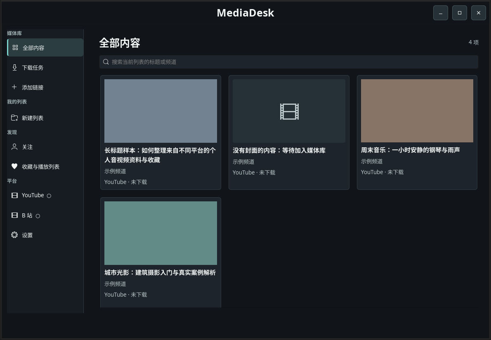

PERSONAL MEDIA WORKSPACE你的收藏，
你的收藏，
回到同一张桌上。
一处桌面空间，整理来自不同地方的音视频，按自己的节奏观看与回听。
A PERSONAL COLLECTION
让内容留下来，
让你重新找到它。
MediaDesk 是面向 Ubuntu 的个人媒体工作台。把 YouTube、B 站与本地文件组织进媒体库，建立自己的列表，再选择在线播放或下载支持的内容。
THE LIBRARY / 媒体库
DESKTOP / UBUNTU 24.04你的内容，自己的顺序。

产品界面 · 隔离环境与示例数据
收藏之后，
还有很多种打开方式。
01 整理与列表不同来源，按自己的主题归档
02 播放与回看本地文件及支持的在线内容
03 下载任务管理下载状态和本地文件